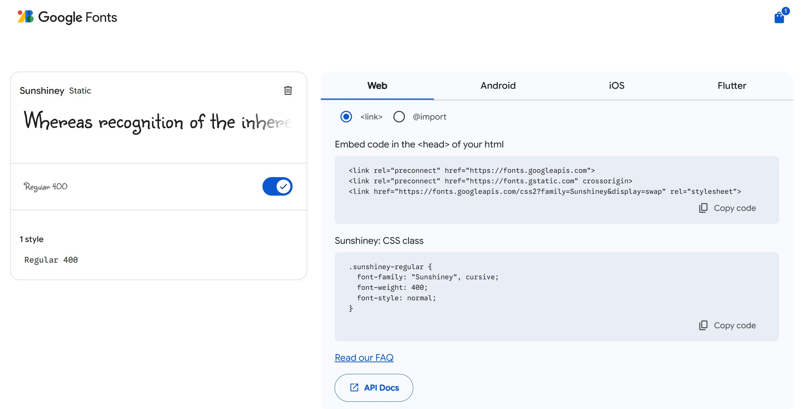

This week, we learned how to use VS Code to create a website and use GitHub to host the code I wrote. I had no programming experience before, so I couldn't really understand what was taught in class at first. But after using the HTML code template the school provided, I successfully created my own personal website for the first time. I chose to upload my toy photos and made the website look like a toy display gallery. Because I chose something I'm interested in, I started to built up interest and passion for making websites. But I know my website still has many shortcomings, and there are many things about programming I'm still not familiar with. I will keep improving this in my future studies.
In this week's reflection, I attached a screenshot to show how I tried to link the font from Google fonts to decorate my website. The reason why I chose this font is that I think the handwriting matches my website style.
